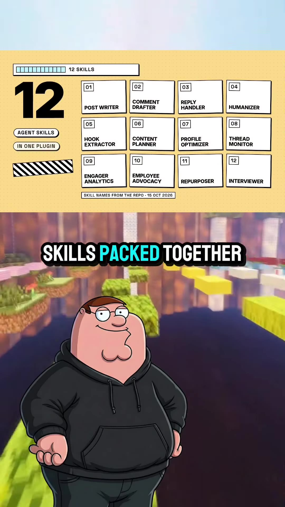
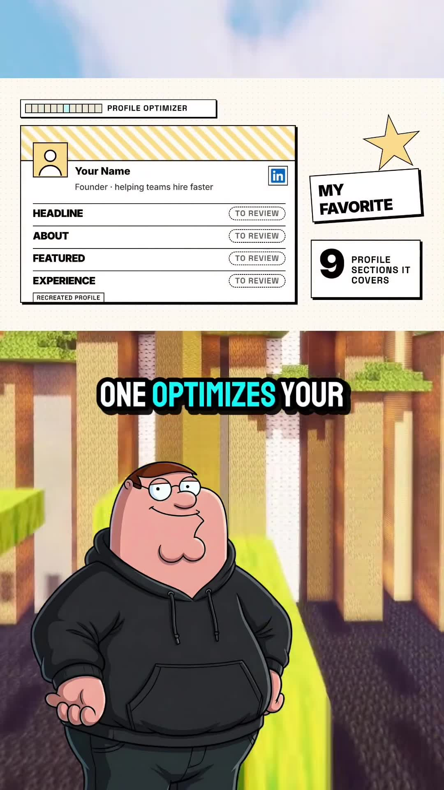

Executive Summary
Building organic authority and consistent distribution on LinkedIn typically requires hours of manual drafting, comment engagement, and hook testing. LinkedIn Skills (open-sourced by Serge Bulayev at github.com/sergebulayev/linkedin-skills) is a specialized pack of 12 modular Claude Agent Skills designed to run natively inside Claude.ai and Claude Code.
Unlike naive LLM wrappers that produce hallucinated or robotic corporate spam, this skills pack enforces two foundational engineering principles:
- Strict Human-in-the-Loop (HITL) Guardrails: Every agent skill emits an editable preview draft with explicit approval gates (
[EDIT]/[APPROVE]). Nothing is published or executed autonomously without user sign-off. - Automated De-AI / Humanization Engine: A dedicated
humanizerskill scans generated text, purges predictable AI jargon (e.g. "crucial", "leverage", "robust", "testament"), enforces typographic constraints (strictly limiting em dashes to < 1 per 100 words), and cross-validates copy across 5 major AI detection benchmarks before outputting.
Visual Architecture & Installation


/plugin marketplace add sergebulayev/linkedin-skills.Installation & Setup
The skill bundle can be registered into your Claude environment in two ways:
Option A: Claude Code / CLI Plugin Command
# 1. Add the marketplace registry pointer
/plugin marketplace add sergebulayev/linkedin-skills
# 2. Install the skill pack bundle
/plugin install linkedin-skills@linkedin-skillsOption B: Claude.ai Web Interface
- Navigate to Account Settings → Feature Previews / Customization → Plugins.
- Select Add Custom Plugin.
- Paste the repository URL:
https://github.com/sergebulayev/linkedin-skills. - Grant execution permissions for text parsing and skill invocation.
The 12 Agent Skills Breakdown
| Skill Identifier | Primary Responsibility | Input Parameters & Operational Behavior |
|---|---|---|
post-writer |
Long-form & short-form post generation | Consumes core thesis or notes; formats copy using 20 proven viral hook frameworks (curiosity gap, contrarian insight, before/after, framework teardown). |
comment-drafter |
Inbound & outbound commenting | Reads peer posts; drafts insightful, value-additive commentary adding tactical nuance rather than generic congratulations. |
reply-handler |
Comment thread conversation management | Processes comments left on your posts and generates context-aware, engaging follow-ups to maintain algorithmic velocity. |
humanizer |
Style purification & AI detection evasion | Scans drafts to purge AI clichés ("dive in", "delve", "unleash", "tapestry"), limits em dashes, and benchmarks against GPTZero, Originality.ai, ZeroGPT, Sapling, and CopyLeaks. |
hook-extractor |
Viral headline reverse-engineering | Analyzes top-performing posts in your niche and extracts their structural syntax and emotional triggers for reuse. |
content-planner |
7-day calendar orchestration | Generates a balanced weekly queue across 7 archetypes: Personal Story, Tactical How-To, Video breakdown, Contrarian Opinion, Resource List, Career Lesson, and Weekly Recap. |
profile-optimizer |
Profile conversion auditing | Audits 9 key profile touchpoints (Headline, About/Bio, Featured links, Experience descriptions, Call-to-action banner). |
thread-monitor |
Engagement velocity tracking | Monitors high-engagement discussions to alert the user when prompt responses will maximize visibility. |
engager-analytics |
Audience interaction auditing | Identifies top commenters, key prospective clients, and high-affinity accounts interacting with your feed. |
employee-advocacy |
Team distribution alignment | Adapts corporate brand messaging into distinct individual founder/executive tones for company-wide amplification. |
repurposer |
Multi-channel asset transmutation | Converts newsletters, long-form blogs, YouTube transcripts, or podcast notes into native LinkedIn carousels and text drops. |
interviewer |
Socratic founder storytelling extraction | Conducts rapid interactive Q&A sessions with the user to extract authentic anecdotes, failure lessons, and operational stories. |
Engineering Architecture: How Skills Execute in Claude
┌─────────────────────────────────────────────────────────────┐
│ User Input / Trigger │
│ e.g., "Draft a post about our Postgres scaling" │
└──────────────────────────────┬──────────────────────────────┘
│
▼
┌─────────────────────────────────────────────────────────────┐
│ Claude Agent Harness │
│ - Selects `interviewer` or `post-writer` based on context │
│ - Formats content using 20 Hook Templates │
└──────────────────────────────┬──────────────────────────────┘
│
▼
┌─────────────────────────────────────────────────────────────┐
│ Humanizer Pass │
│ - Strips AI buzzwords ("crucial", "leverage", "delve") │
│ - Restricts punctuation (em dashes < 1 / 100 words) │
│ - Verifies natural sentence length variance │
└──────────────────────────────┬──────────────────────────────┘
│
▼
┌─────────────────────────────────────────────────────────────┐
│ HITL Preview Gate │
│ Emits clean draft with [EDIT] and [APPROVE] checkpoints │
│ STOPS execution: No automated outbound posting permitted │
└─────────────────────────────────────────────────────────────┘Key Takeaways & Best Practices
- Install Once, Reuse Everywhere: Adding
sergebulayev/linkedin-skillsturns Claude into an end-to-end B2B personal branding partner that remembers your voice and stylistic constraints. - Always Run the Humanizer: Never publish raw LLM outputs to LinkedIn; algorithmic feeds and professional readers penalize boilerplate corporate phrases.
- Strict Human Supervision: Automated social posting carries high reputational risk. Keep Claude in the role of researcher, drafter, and editor—never the autonomous publisher.